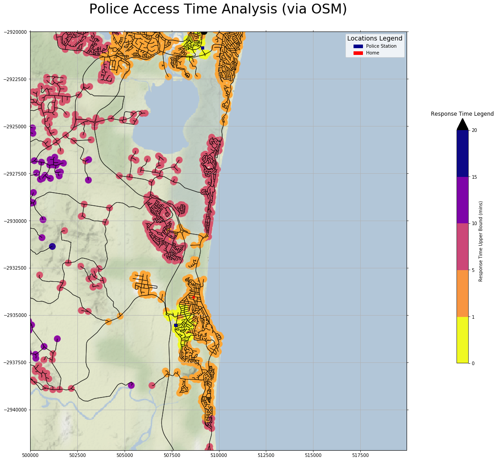

OSMNX and Policing Response Times
Police Response Times via the Road Network
Introduction
So, I thought that I would try to crank up the OSMNX package again, after using it last year to create art works showing the road networks of small local towns. This interest was sparked via a flurry of tweets and stories on how grid-like various city road networks were.
This time, I thought I would do something a little more serious than art works. Prompted by the fact that the Queensland Government publishes a lot of Shapefiles showing locations of various utilities, I decided the look at how fast the police could respond to the rather linear road network local to our area.
Data Sources
The location of the police station locations is https://data.qld.gov.au/dataset/qps-police-stations
Mapping Design
Because I wanted to underlay some geographic context to the visualization of the road network, I decided to go with Cartopy as the basic mapping software.
In order to provide some context, I decided to use Cartopy to underlay the Stamen image tiles, showing just terrain. The URL is http://tile.stamen.com/terrain-background
This also proves a nice (and accurate) coastline, without which the map would be a little confusing.
I chose OSMNX for road information, as it is unsurpassed in this area.
Implementation
Background Map Tiles
The Stamen terrain-only background map tiles are not supported out-of-box by Cartopy, but it is pretty easy to get access to them.
The following code fragment gets us an imagery map tile provider that we can pass to Cartopy.
class StamenToner(GoogleTiles):
def _image_url(self, tile):
x, y, z = tile
url = 'http://tile.stamen.com/terrain-background/{}/{}/{}.png'.format(z, x, y)
return url
# end _image_url
# end StamenToner
imagery = StamenToner()
Getting to Road Data
First, we define area we wish to analyse, by providing a range of longitude and latitude values.
home = ( 153, 153.2, -26.6, -26.4)
We then get the road data inside this bounding box. Note the truncate_by_edge=True parameter. If you have a section of road that ends in a node outside the bounding box, then by default, that chunk of road will not be included. This leads to what appear to be missing roads when visually assessing the graphic. Note also that OSMNX coordinates go (latitude, longitude).
graph = ox.graph_from_bbox(home[3], home[2], home[1], home[0],
network_type='drive',
truncate_by_edge=True, )
Set up Response Time Analysis
We then set up:
-
the response times we are interested in (i.e. the time estimated for a police car to drive from a station, to a node in the road network)
-
the average speed of a police car
as follows:
trip_times = [1, 5, 10, 15, 20,] #in minutes
travel_speed = 80 # speed in km/hour
meters_per_min = travel_speed*1000/60
Moving to GeoPandas space
We now add an attribute "time" for each of the edges in our road network. This attribute captures how long it will take to drive the length of that edge, as the assumed speed of a police car.
# create travel time attribute for edges
for u,v, k, data in graph.edges(data=True, keys=True):
data['time'] = data['length'] / meters_per_min
#end for
We now create GeoPandas DataFrames for the node and edge data we got from OSMNX (note the order of the DataFrames returned) .
# convert to GDFs
n_df, e_df = ox.save_load.graph_to_gdfs(graph, nodes=True, edges=True)
We now define an attribute access_time_bnd; this is the access time bound (i.e. the maximum time it will take to police car to turn up: might be less, but can't be greater).
We then set this attribute initially to a very large value.
LARGE = 1_000_000
e_df['access_time_bnd'] = LARGE
n_df['access_time_bnd'] = LARGE
Finally, we convert the geographic information in the GeoPandas DataFrames into Universal Transverse Mercator (UTM) coordinate reference system (CRS).
# switch to UTM (so euclidean measurement works)
n_df = ox.projection.project_gdf(n_df)
e_df = ox.projection.project_gdf(e_df)
Making the Map
We now use Cartopy to create a map. The CRS to be used we get from the edge GeoPandas DataFrame (e_df). Note that OSMNX returns UTM coordinates referenced from the equator (i.e. southern hemisphere y coordinates are -ve), so we have to lie to Cartopy, and tell it we are in the northern hemsphere. Finally, we specify the aspect ratio of x and y axis to be the same (no non-map-like stretching of one axis or the other).
# set up Cartopy aware figure and Axes
fig = plt.figure(figsize=(20, 20) )
utm_crs = ccrs.UTM(e_df.crs['zone'],
southern_hemisphere=False)
ax = fig.add_subplot(1, 1, 1, projection= utm_crs)
ax.set_aspect('equal')
We then specify the extent of the map (same as our road network bounding box). Note we can use lat/lon values, as long as we tell Cartopy that the coordinates are in the PlateCarree CRS.
home = ( 153, 153.2, -26.6, -26.4) #home = ( 152.5, 153.5, -27, -26)
ax.set_extent(home, crs=ccrs.PlateCarree() )
Finally, we add a background to the map.
# add spatial context
ax.add_image(imagery, 12, alpha=0.75)
Police Station Data
We now define a Polygon object that corresponds to our map extent (as a list of polygon xy corner points), read the police station data, and select out just those stations that fall in our extent (I happen to know the police station locations are in longitude / latitude coordinates). This is probably not a very rigorous analysis, as police station located just beyound the bounds of the map would invalidate our analysis, but this is just an example.
# home = ( 153, 153.2, -26.6, -26.4)
map_poly = Polygon([(home[0], home[2]), (home[1], home[2]), (home[1], home[3]), (home[0], home[3])])
station_file='D:\\Cartography\\QPS_STATIONS.shp'
police_df = gpd.read_file(station_file)
stations_pts = [x for x in police_df['geometry'] if x.within(map_poly)]
We now get the road network nodes closest to these police stations, using OSMNX.
pol_nodes = [ox.utils.get_nearest_node(graph, (station.xy[1][0], station.xy[0][0])) for station in stations_pts]
We find there two stations:
local = police_df[police_df['geometry'].within(map_poly)]
local.head()
gives us:
| . | NAME | geometry |
|---|---|---|
| 73 | COOLUM STATION | POINT (153.077204 -26.540297) |
| 235 | NOOSA HEADS STATION | POINT (153.0915830002693 -26.40783400000532) |
Response Time Calculation
The general approach is, for a given police station, and for the largest of the travel times we are interested in, we get via networkx the ego_graph: a subgraph of our road network, showing all nodes that can be reached in that time or less. We assign each node in this subgraph an access_time_bnd value equal to this travel time if it is smaller than the current value for that node, and then repeat for the next smallest travel time, and so on.
We then repeat this process for the next police station. At the end, inaccessable nodes will have our initial LARGE value, and the upper bound for the access time from the closest station will be set for all accessible nodes.
# get access times
for pol_node in pol_nodes:
for trip_time in sorted(trip_times, reverse=True):
subgraph = nx.ego_graph(graph, pol_node, radius=trip_time, distance='time')
for node in subgraph.nodes():
current = n_df.at[node, 'access_time_bnd']
n_df.at[node, 'access_time_bnd'] = min(trip_time, current)
#end for
#end for
#end for
Visualizing the Results
Getting a visualization of the response times is tricky. The values we have in the n_df["access_time_bnd"] attribute look to GeoPandas like continuous floating point values. However we know that the value can only take values in the trip_times list. I have chosen to let GeoPandas treat them a continuous values, and assign them a color from my Color Map, but to draw my own colorbar to show that the values are in fact quantized.
First we set up our Color Map, setting the color to use for values outside our desired range as white and black for low and high out-of-range respectively.
# set up color map to show black for unreachable nodes (LARGE trip times)
my_cmap = mcm.get_cmap(name='plasma_r')
my_cmap.set_under('white')
my_cmap.set_over('black')
Then we plot the road network edges in black, and color each road network node according to the attribute access_time_bnd (except for large values greater than vmax, where the color map will be ignored, and the my_cmap.set_over('black') color will be assigned). The roads are drawn over the colored nodes (set by zorder parameter).
# plot road network
e_df.plot(ax=ax, edgecolor='black', linewidth=1, facecolor='none', zorder=2, alpha=0.8, )
n_df.plot(ax=ax,
column='access_time_bnd',
cmap=my_cmap,
markersize=200,
zorder=1,
vmax=trip_times[-1]+1,
)
We show the police stations by using GeoPandas to convert their geometry to UTM, and plotting blue squares.
# project to UTM
police_df = police_df.to_crs(utm_crs.proj4_init)
# plot stations
police_df.plot(ax=ax, marker='s',
color='darkblue', zorder=5, legend=True)
We plot my home location (this time using Cartyopy to do the CRS transformation from lat/ lon values)
# plot marker with lon / lat
home_lat, home_lon = -26.527,153.08679
ax.plot(home_lon, home_lat, marker='o',
transform=ccrs.PlateCarree(),
markersize=5, alpha=1, color='red', zorder=5 )
Annotating the Map
First, we set a big title, and add a grid.
# set title and grid
label_utm_grid2(ax)
plt.title('Police Access Time Analysis (via OSM)', {'fontsize':30}, pad=40)
Now, we create a colorbar for the road node colors. Normally, GeoPandas will do this automatically if we say legend=True, but as explained above, we want a colorbar that reflects the quantized nature of our data, not a continuous bar.
First we specify a Normalizer that doesn't smoothly map attribute values into colors but has jumps in the mapping at specified boundaries.
#bounds = [1, 5, 10, 15, 20,]
bounds = [0, 1, 5, 10, 15, 20]
my_norm = mpc.BoundaryNorm(boundaries=bounds, ncolors=256)
Now, we create a color bar with our chosen color map, and normalizing function, shrink it to size, move it a bit to the right, and add a label to explain the attribute. Finally we add a title to the Axes object holding the colorbar (the second Axes object in our figure).
sm = plt.cm.ScalarMappable(cmap=my_cmap, norm=my_norm)
sm._A = []
cb = plt.colorbar(sm, shrink=0.5, pad=.1, extend='max')
cb.set_label('Response Time Upper Bound (mins)')
fig.axes[1].set_title('Response Time Legend')
For each of the symbols that were added outside of GeoPandas, we create patches with labels with the same color, and then create a legend. Then we set the title of this legend, and show the result.
# for symbol, draw a patch, append handle to list, and append symbol name to names list
names = []
handles = []
patch = mpatches.Patch(color='darkblue', label='Police Station')
handles.append(patch)
names.append('Police Station')
patch = mpatches.Patch(color='red', label='Home')
handles.append(patch)
names.append('Home')
# create legend
leg = ax.legend(handles, names)
leg.set_title('Locations Legend',prop={'size':14})
plt.show()
Resulting Graphic

A larger version is here
{kind=link}
You can see the close-in nodes in yellow for both stations, and the color gradient as you get further away. There is one node colored black at the top of the map (almost certainly a node that appear inaccessible, because of truncation by the bounding box), and one node with a response time greater than 15 minutes in the hinterland.
This analysis is clearly superficial, and the next step might be to use the Open Street Map road data to get a more accurate estimate of top speed on each piece of road (edge). However, for a few lines of code, it does provide a visual impression of the spatial limitations of service capabilities.
Helper Routines
This function labels UTM grids:
def label_utm_grid2(ax):
''' Warning: should only use with small area UTM maps '''
for val,label in zip(ax.get_xticks(), ax.get_xticklabels()):
label.set_text(str(val))
label.set_position((val,0))
for val,label in zip(ax.get_yticks(), ax.get_yticklabels()):
label.set_text(str(val))
label.set_position((0,val))
plt.tick_params(bottom=True,top=True,
left=True,right=True,
labelbottom=True,labeltop=False,
labelleft=True,labelright=False)
ax.xaxis.set_visible(True)
ax.yaxis.set_visible(True)
plt.grid(True)
Conclusion
For completeness, here are the imports for this Jupyter Notebook (not all are used in the code fragments above, as some are for producing output to support reproducability).
import osmnx as ox
import networkx as nx
import geopandas as gpd
import pandas as pd
import numpy as np
import matplotlib.pyplot as plt
import matplotlib.patches as mpatches
import matplotlib.colors as mpc
import matplotlib.cm as mcm
import cartopy.crs as ccrs
from cartopy.mpl.gridliner import LONGITUDE_FORMATTER, LATITUDE_FORMATTER
from cartopy.io.img_tiles import GoogleTiles
from shapely.geometry import Polygon
from shapely.geometry import LineString